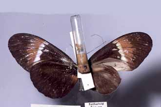
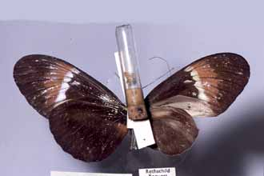
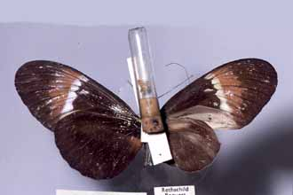
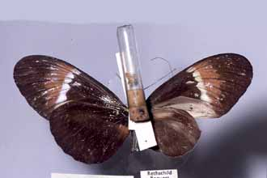

To next hybrid
To previous hybrid
NOTES
No: 49
Genus of species 1: Heliconius
Species 1: melpomene
Subspecies of species 1: {euryas}
Genus of species 2: Heliconius
Species 2: cydno
Subspecies of species 2: cydno
Sex: m
Country: Colombia
Locality: Sta. Fé de Bogotá
Year: <1930
Photo no.: melcyd18
Named hybrid: nr. rubellius
Collection: BM
Collector:
Author/publication:
Notes: F1; crumpled hindwing
Last updated: 18 October 2003